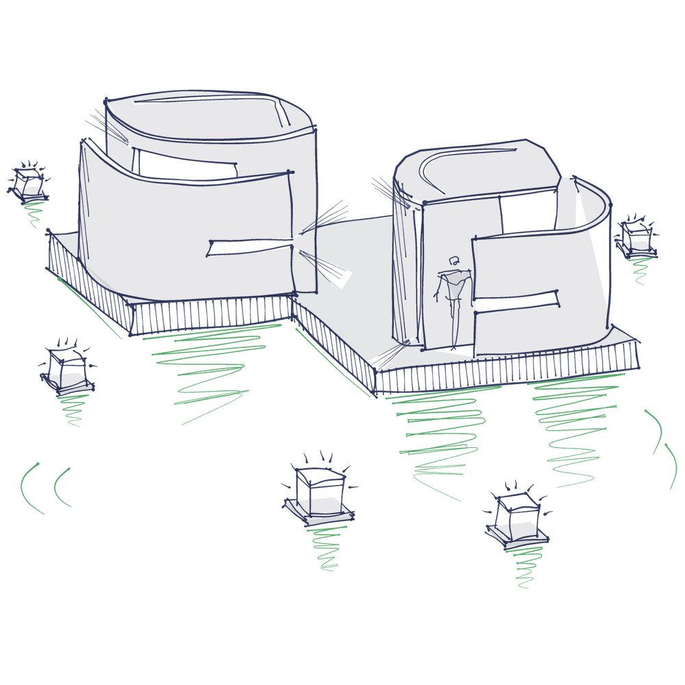
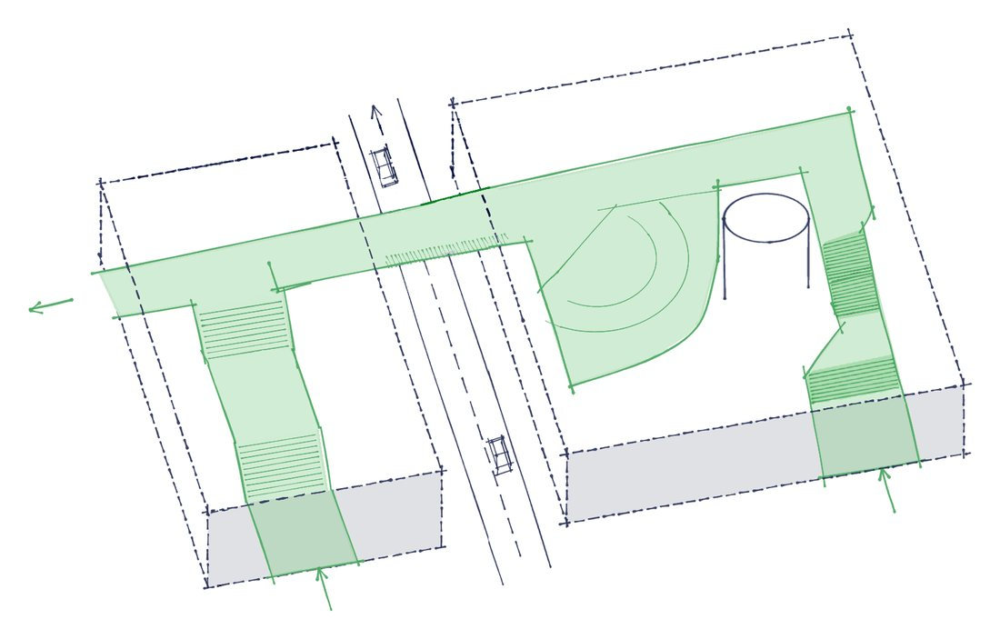

洛杉矶的建筑设计师。住宅和小型商业项目全程由我负责；我最在意的，是建成之后人在里面怎么生活。


研究生毕业后在洛杉矶执业三年，同时负责 20 多个项目，从方案设计一路做到取得许可。项目包括山地独栋住宅、100% 可负担多户住宅、ADU 和商业室内改造；此前在 CallisonRTKL 参与过韩国大型商业项目的方案设计。
邮箱领英全部作品
 Siqi Zhang
Siqi Zhang
Siqi Zhang
Siqi Zhang